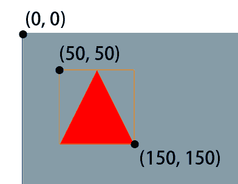
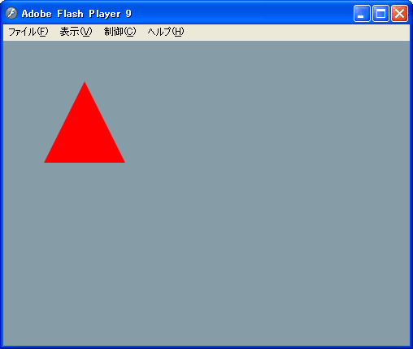
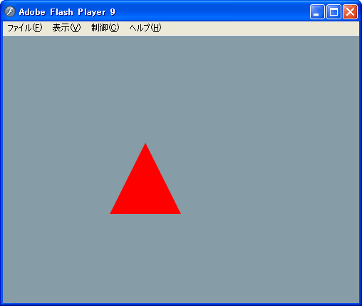
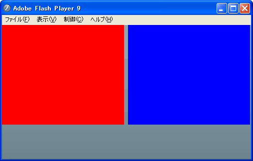

「てっく煮」というサイトを
やってます。
This is my homepage.

有限会社 CO-CONV
最田健一
にとよん と申します。
Hello, my name is 'nitoyon'.
createEmptyMovieClip("mc", 0);
mc.beginFill(0xff0000);
mc.moveTo(50, 0);
mc.lineTo(100, 100);
mc.lineTo(0, 100);
mc.endFill();
package {
import flash.display.*;
public class Test extends Sprite {
public function Test() {
// details are on the next page...
}
}
}
var mc:MovieClip = new MovieClip();
addChild(mc);
mc.graphics.beginFill(0xff0000);
mc.graphics.moveTo(50, 0);
mc.graphics.lineTo(100, 100);
mc.graphics.lineTo(0, 100);
mc.graphics.endFill();
createEmptyMovieClip("mc", 0);
mc.beginFill(0xff0000);
mc.moveTo(50, 0);
mc.lineTo(100, 100);
mc.lineTo(0, 100);
mc.endFill();
var mc:MovieClip = new MovieClip(); addChild(mc); mc.graphics.beginFill(0xff0000); mc.graphics.moveTo(50, 0); mc.graphics.lineTo(100, 100); mc.graphics.lineTo(0, 100); mc.graphics.endFill();
var mc:MovieClip = new MovieClip(); addChild(mc); mc.graphics.beginFill(0xff0000); mc.graphics.moveTo(100, 50); mc.graphics.lineTo(150, 150); mc.graphics.lineTo( 50, 150); mc.graphics.endFill(); trace(mc.x, mc.y);
var mc:MovieClip = new MovieClip(); addChild(mc); mc.graphics.beginFill(0xff0000); mc.graphics.moveTo(100, 50); mc.graphics.lineTo(150, 150); mc.graphics.lineTo( 50, 150); mc.graphics.endFill(); trace(mc.x, mc.y);
trace(mc.x, mc.y); >> 0 0
x と y のデフォルト値は 0
The default value of 'x' and 'y' is 0.
mc.x = 0; mc.y = 0;
mc.x = 100; mc.y = 100;
mc.graphics.beginFill(0xff0000); mc.graphics.moveTo(100, 50); mc.graphics.lineTo(150, 150); mc.graphics.lineTo( 50, 150); mc.graphics.endFill(); trace(mc.width, mc.height);
trace(mc.width, mc.height); >> 100 100
図形自体のサイズを返す
The size of bounding rectangle is returned.
trace(mc.getBounds(mc)); >> (x=50, y=50, w=100, h=100)
FlashX = mc.x + mc.getBounds(mc).x;
mc.graphics.beginFill(0xff0000);
mc.graphics.moveTo(100, 50);
mc.graphics.lineTo(150, 150);
mc.graphics.lineTo( 50, 150);
mc.graphics.endFill();
trace(mc.width); // 100
mc.width = 50;

mc.width: 100 → 50
mc.width: 100 → 50 mc.xscale: 1.0 → 0.5
width, height プロパティの修正は scale に影響する
Setting 'width', 'height' property changes 'scale' property.
Important parameters are:
<?xml version="1.0" encoding="utf-8"?>
<mx:Application xmlns:mx="http://www.adobe.com/2006/mxml"
paddingLeft="0" paddingRight="0"
paddingTop="0" paddingBottom="0">
<mx:HBox width="100%" height="100%">
<mx:Canvas width="200" height="200" backgroundColor="red"/>
<mx:Canvas width="100" height="200" backgroundColor="blue"/>
</mx:HBox>
</mx:Application>
<?xml version="1.0" encoding="utf-8"?>
<mx:Application xmlns:mx="http://www.adobe.com/2006/mxml"
paddingLeft="0" paddingRight="0"
paddingTop="0" paddingBottom="0">
<mx:HBox width="100%" height="100%">
<mx:Canvas width="200" height="200" backgroundColor="red"/>
<mx:Canvas x="50" y="50"
width="100" height="200" backgroundColor="blue"/>
</mx:HBox>
</mx:Application>
自動配置を使用するコンテナでは、x プロパティまたは y プロパティを直接設定しても、何も効果がないか、効果があっても一時的に過ぎません。
(Flex 2 開発ガイドより)
For containers that use automatic positioning, setting the x or y property directly has no effect, or only a temporary effect,
(Quoted from: Flex 2 Developer’s Guide)
これは、これらのコンテナの x 位置が、指定値ではなくレイアウト計算によって設定されるためです。
(Flex 2 開発ガイドより)
because the layout calculations set the x position to the calculation result, not the specified value.
(Quoted from: Flex 2 Developer’s Guide)
<?xml version="1.0" encoding="utf-8"?>
<mx:Application xmlns:mx="http://www.adobe.com/2006/mxml"
paddingLeft="0" paddingRight="0"
paddingTop="0" paddingBottom="0">
<mx:HBox width="100%" height="100%">
<mx:Canvas width="200" height="200" backgroundColor="red"/>
<mx:Spacer width="50"/>
<mx:VBox>
<mx:Spacer height="50"/>
<mx:Canvas width="100" height="200" backgroundColor="blue"/>
</mx:VBox>
</mx:HBox>
</mx:Application>
<?xml version="1.0" encoding="utf-8"?>
<mx:Application xmlns:mx="http://www.adobe.com/2006/mxml"
paddingLeft="0" paddingRight="0"
paddingTop="0" paddingBottom="0">
<mx:Canvas width="100%" height="100%">
<mx:Canvas width="200" height="200" backgroundColor="red"/>
<mx:Canvas x="250" y="50"
width="100" height="200" backgroundColor="blue"/>
</mx:Canvas>
</mx:Application>
x y に設定したとおりに配置される唯一のコンテナ。
The only container that lets you explicitly specify the location of its children within the container by using the x and y properties of each child.
<?xml version="1.0" encoding="utf-8"?>
<mx:Application xmlns:mx="http://www.adobe.com/2006/mxml"
paddingLeft="0" paddingRight="0"
paddingTop="0" paddingBottom="0">
<mx:HBox width="100%" height="100%">
<mx:Canvas width="30%" height="200" backgroundColor="red"/>
<mx:Canvas width="60%" height="200" backgroundColor="blue"/>
</mx:HBox>
</mx:Application>
<?xml version="1.0" encoding="utf-8"?>
<mx:Application xmlns:mx="http://www.adobe.com/2006/mxml"
paddingLeft="0" paddingRight="0"
paddingTop="0" paddingBottom="0">
<mx:HBox width="100%" height="100%">
<mx:Canvas width="60%" height="200" backgroundColor="red"/>
<mx:Canvas width="60%" height="200" backgroundColor="blue"/>
</mx:HBox>
</mx:Application>
(1)

(2)
パーセント値の要求が残りの領域 (親コンテナのサイズ - すべての確保済み領域)に収まらない場合は、指定されたパー セント値に従って残りの領域を比例配分します。
(Flex 2 開発ガイドより)
If available space (parent container size minus all reserved space, including borders, padding, and gaps) cannot accommodate the percentage requests, divides the available space in proportion to the specified percentages.
(Quoted from: Flex 2 Developer’s Guide)
<?xml version="1.0" encoding="utf-8"?>
<mx:Application xmlns:mx="http://www.adobe.com/2006/mxml"
paddingLeft="0" paddingRight="0"
paddingTop="0" paddingBottom="0">
<mx:HBox width="100%" height="100%">
<mx:Canvas width="300" height="200" backgroundColor="yellow"/>
<mx:Canvas width="20%" height="200" backgroundColor="red"/>
<mx:Canvas width="10%" height="200" backgroundColor="blue"/>
</mx:HBox>
</mx:Application>
<?xml version="1.0" encoding="utf-8"?>
<mx:Application xmlns:mx="http://www.adobe.com/2006/mxml"
paddingLeft="0" paddingRight="0"
paddingTop="0" paddingBottom="0">
<mx:HBox width="100%" height="100%">
<mx:Canvas width="300" height="200" backgroundColor="yellow"/>
<mx:Canvas width="20%" height="200" backgroundColor="red"/>
<mx:Canvas width="10%" minWidth="100" height="200"
backgroundColor="blue"/>
</mx:HBox>
</mx:Application>
計算値が最小または最大の高さまたは幅の指定と衝突する場合は、最小値または最大値の方を使用し、
(Flex 2 開発ガイドより)
If a minimum or maximum height or width specification conflicts with a calculated value,
(Quoted from: Flex 2 Developer’s Guide)
その他すべてのパーセント値ベースのコンポーネントを、少なくなった残りの領域に基づいて再計算します。
(Flex 2 開発ガイドより)
uses the minimum or maximum value, and recalculates all other percentage-based components based on the reduced available space.
(Quoted from: Flex 2 Developer’s Guide)
minWidth="100" > 50px
width → 100px
Important parameters are: